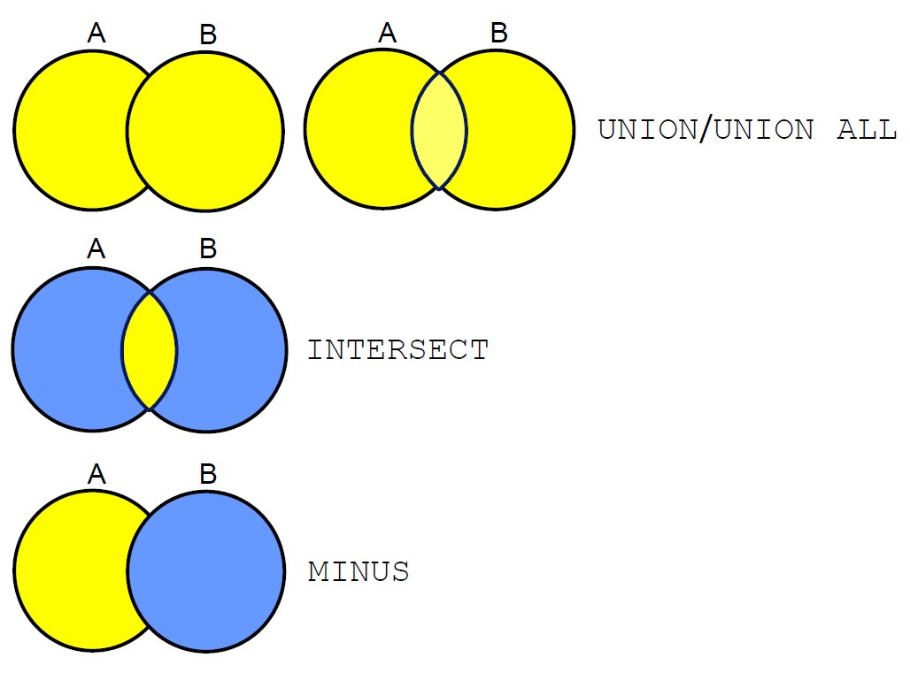
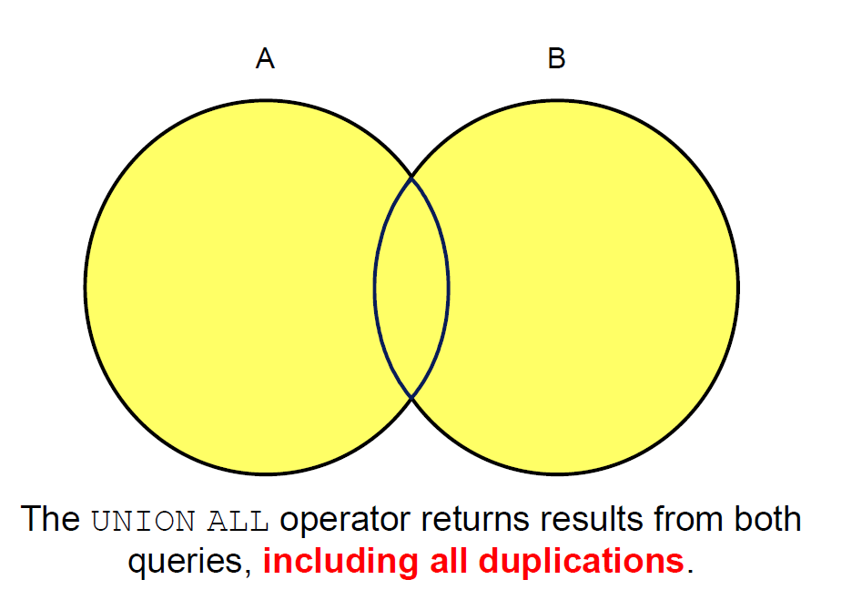

Set Operators
Set operators

Tables Used
- EMPLOYEES: Provides details regarding all current employees
- JOB_HISTORY: Records the details of the start date and end date of the former job, and the job identification number and department when an employee switches jobs
When an employee switches jobs, the details of the start date and end date of the former job, the job identification number, and the department are recorded in the JOB_HISTORY table.
UNION Operator

Display the current and previous job details of all employees. Display each employee only once.
SELECT employee_id, job_id
FROM nikovits.employees
UNION
SELECT employee_id, job_id
FROM nikovits.job_history;
| EMPLOYEE_ID | JOB_ID |
|---|---|
| 100 | AD_PRES |
| 101 | AC_ACCOUNT |
| 101 | AC_MGR |
| 101 | AD_VP |
| 102 | AD_VP |
| 102 | IT_PROG |
| 103 | IT_PROG |
| 104 | IT_PROG |
| 105 | IT_PROG |
| 106 | IT_PROG |
| 107 | IT_PROG |
| 108 | FI_MGR |
| 109 | FI_ACCOUNT |
| 110 | FI_ACCOUNT |
| 111 | FI_ACCOUNT |
| 112 | FI_ACCOUNT |
| 113 | FI_ACCOUNT |
| 114 | PU_MAN |
UNION ALL Operator

Display the current and previous departments of all employees.
SELECT employee_id, job_id, department_id
FROM nikovits.employees
UNION ALL
SELECT employee_id, job_id, department_id
FROM nikovits.job_history
ORDER BY employee_id;
| EMPLOYEE_ID | JOB_ID | DEPARTMENT_ID |
|---|---|---|
| 100 | AD_PRES | 90 |
| 101 | AD_VP | 90 |
| 101 | AC_ACCOUNT | 110 |
| 101 | AC_MGR | 110 |
| 102 | IT_PROG | 60 |
| 102 | AD_VP | 90 |
| 103 | IT_PROG | 60 |
| 104 | IT_PROG | 60 |
| 105 | IT_PROG | 60 |
| 106 | IT_PROG | 60 |
| 107 | IT_PROG | 60 |
| 108 | FI_MGR | 100 |
INTERSECT Operator

Display the employee IDs and job IDs of those employees who currently have a job title that is the same as their job title when they were initially hired (that is, they changed jobs but have now gone back to doing their original job).
SELECT employee_id, job_id
FROM nikovits.employees
INTERSECT
SELECT employee_id, job_id
FROM nikovits.job_history;
| EMPLOYEE_ID | JOB_ID |
|---|---|
| 176 | SA_REP |
| 200 | AD_ASST |
MINUS Operator

Display the employee IDs of those employees who have not changed their jobs even once.
SELECT employee_id,job_id
FROM nikovits.employees
MINUS
SELECT employee_id,job_id
FROM nikovits.job_history;
| EMPLOYEE_ID | JOB_ID |
|---|---|
| 100 | AD_PRES |
| 101 | AD_VP |
| 102 | AD_VP |
| 103 | IT_PROG |
| 104 | IT_PROG |
| 105 | IT_PROG |
| 106 | IT_PROG |
| 107 | IT_PROG |
| 108 | FI_MGR |
| 109 | FI_ACCOUNT |
| 110 | FI_ACCOUNT |
| 111 | FI_ACCOUNT |
| 112 | FI_ACCOUNT |
Set Operator Guidelines
The expressions in the SELECT lists must match in number and data type. - Parentheses can be used to alter the sequence of execution. - The ORDER BY clause: - Can appear only at the very end of the statement - Will accept the column name, aliases from the first SELECT statement, or the positional notation.
Key Behaviors of Set Operators in Oracle Server
Set operators (such as UNION, UNION ALL, INTERSECT, MINUS) combine the results of two or more queries.
Important Rules
Duplicate rows are automatically eliminated, except in UNION ALL.
UNION,INTERSECT, andMINUSperform distinct processing (remove duplicates).UNION ALLretains all duplicates.
Column names from the first query appear in the result.
- The final result set uses the column names (and aliases) from the first SELECT statement.
- Subsequent queries must have compatible columns, but their names/aliases are ignored in the output.
The output is sorted in ascending order by default, except in UNION ALL.
UNION,INTERSECT, andMINUSimplicitly sort the entire result set in ascending order by all columns (to eliminate duplicates).UNION ALLdoes not sort the results—it returns rows in the order they are retrieved.
Common Set Operators
| Operator | Description | Removes Duplicates? | Sorts Result? |
|---|---|---|---|
| UNION ALL | Returns all rows from both queries | No | No |
| UNION | Returns unique rows from both queries | Yes | Yes |
| INTERSECT | Returns rows common to both queries | Yes | Yes |
| MINUS | Returns rows from first query not in second | Yes | Yes |
Matching the SELECT Statements
Using the UNION operator, display the department ID, location, and hire date for all employees.
SELECT department_id, TO_NUMBER(null)
location, hire_date
FROM nikovits.employees
UNION
SELECT department_id, location_id, TO_DATE(null)
FROM nikovits.departments;
| DEPARTMENT_ID | LOCATION | HIRE_DATE |
|---|---|---|
| 10 | 1700 | NULL |
| 10 | NULL | 17/09/87 |
| 20 | 1800 | NULL |
| 20 | NULL | 17/02/96 |
| 20 | NULL | 17/08/97 |
| 30 | 1700 | NULL |
| 30 | NULL | 07/12/94 |
| 30 | NULL | 18/05/95 |
| 30 | NULL | 24/07/97 |
| 30 | NULL | 24/12/97 |
| 30 | NULL | 15/11/98 |
| 30 | NULL | 10/08/99 |
| 40 | 2400 | NULL |
Using the UNION operator, display the employee ID, job ID, and salary of all employees.
SELECT employee_id, job_id,salary
FROM nikovits.employees
UNION
SELECT employee_id, job_id,0
FROM nikovits.job_history;
| EMPLOYEE_ID | JOB_ID | SALARY |
|---|---|---|
| 100 | AD_PRES | 24000 |
| 101 | AC_ACCOUNT | 0 |
| 101 | AC_MGR | 0 |
| 101 | AD_VP | 17000 |
| 102 | AD_VP | 17000 |
| 102 | IT_PROG | 0 |
| 103 | IT_PROG | 9000 |
| 104 | IT_PROG | 6000 |
| 105 | IT_PROG | 4800 |
| 106 | IT_PROG | 4800 |
| 107 | IT_PROG | 4200 |
| 108 | FI_MGR | 12000 |
| 109 | FI_ACCOUNT | 9000 |
Controlling the Order of Rows
Produce an English sentence using two UNION operators.
(Run as a script, not as a single statement.)
COLUMN a_dummy NOPRINT
SELECT 'sing' AS "My dream", 3 a_dummy
FROM dual
UNION
SELECT 'I''d like to teach', 1 a_dummy
FROM dual
UNION
SELECT 'the world to', 2 a_dummy
FROM dual
ORDER BY a_dummy;
| My dream | A_DUMMY |
|---|---|
| Id like to teach | 1 |
| the world to | 2 |
| sing | 3 |